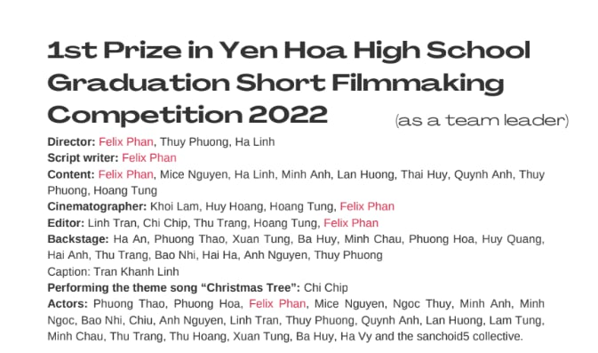

← Selected work
P02 · Produced short film · Yen Hoa High School · 2022
Mùa Hạ Của Chúng Tôi
A graduation short film built around shared memory, conflict and the things classmates leave unsaid.
1stPrize in school competition
1Sole credited scriptwriter
5Production role areas
2022Graduation season
Writing
Writing nostalgia without making it generic.
The script moves from a final classroom session into shared memories, youthful conflict, reconciliation and an empty-room closing image. Dialogue, interview fragments, montage and editorial instructions were planned together rather than treated as separate stages.
Leadership meant carrying a clear narrative while preserving the contribution of a large collaborative crew.
Credit integrity
Team-led, not solo-produced.
I led the team and wrote the script, while directing, cinematography and editing were collaborative. The credit record is shown below because the case is strongest when the collaboration boundary is explicit.
